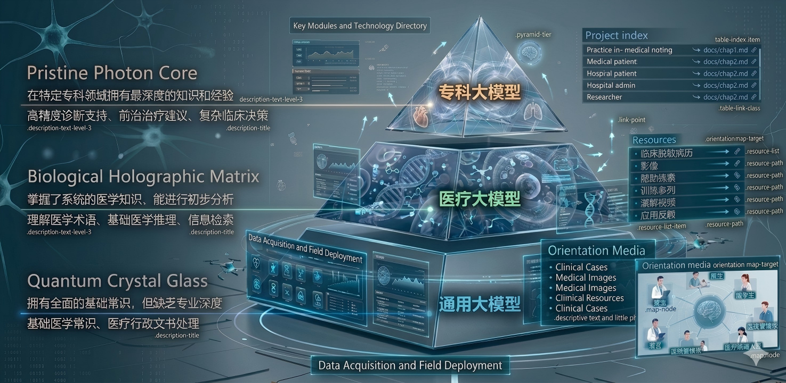

Happy Medical AI
以大语言模型为框架，以医疗场景为引入，从实践案例到技术讲解。
本项目通过 “场景驱动 + 技术解析” 的方式，帮助医学学习者和实践者理解并掌握 AI 在医疗中的落地应用。
🌟 项目逻辑
01
从实践案例出发
真实医疗场景（如病例分析、临床决策、随访管理）。
02
场景映射模型层级
对应通用 → 医疗 → 专科 → 专病大语言模型体系。

📂 项目面向对象

📂 配套资源
- 实际案例：临床脱敏病历 / 影像 / 随访数据
- 训练案例：可复现的输入输出模板
- 讲解视频：每场景 10-15 分钟操作演示 (TODO)
- 应用反馈：来自医生、医学生、医学科研人员、医院管理工作者、患者等用户的使用心得和改进意见
📖 项目导航索引
| 章节名称 | 核心关键内容 | 当前状态 |
|---|---|---|
| 第一章 AI赋能医疗：应用概览与模型区分 | 介绍AI在影像分析、智能问诊等医疗场景的具体应用，对比通用、医疗、专科三类大模型的“本领”与适用场景，搭建知识框架 | Active |
| 第二章 通用大模型的医疗普适性：提示词工程实践 | 结合骨科手术、糖尿病管理等真实场景，讲解如何用提示词工程引导通用大模型辅助医疗工作，让“通用智能”更好服务临床 | Active |
| 第三章 通用医疗大模型：全能医疗助手的功能与实践 | 解析HuatuoGPT等“全科助手”模型，说明其在慢性病管理、智能分诊、医疗知识问答等方面的作用，介绍双轨训练等核心技术，以及医院落地案例 | Active |
| 第四章 专科医疗大模型：专科诊疗的智能辅助 | 聚焦“专科副手”模型，如XrayGPT（胸片分析）、OncoGPT（肿瘤诊疗）等，讲解其在放射科、肿瘤科等专科的具体应用，以及视觉-语言对齐等关键技术 | Active |
| 终章 医疗大模型临床落地：案例、挑战与未来 | 分享国内医院的真实应用案例，拆解大模型临床实践全流程，分析可解释性、可靠性等现存问题，展望未来发展方向 | Active |
🚀 学习方式
Step 1
从案例入手 → 先看真实场景
Step 2
对照模型分类 → 找到合适的模型类型
Step 3
进入技术讲解 → 学习 Prompt/调用/微调方法
Step 4
完成实操训练 → 在临床或科研中应用
Step 5
分享反馈与优化 → 与社区共建
🤝 贡献方式
- 新的医疗场景案例与训练数据
- 不同类型大语言模型的应用经验
- 教程改进与工具优化
📜 ACADEMIC LICENSE & DISCLAIMER
本项目适用于 医学学习与科研，不替代临床诊断与治疗。